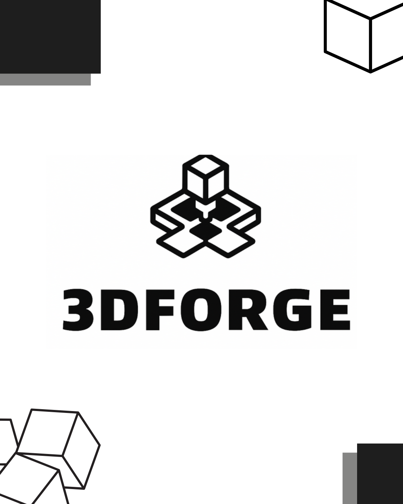

Varias personas han perdido porcentaje de su vista a través del tiempo o han perdido este sentido por diferentes ámbitos de su vida o incluso algunos nacen con esta discapacidad teniendo que buscar apoyo mediante el bastón guiador. Según el CRAC alrededor de 2 millones de personas en Colombia sufre de discapacidad visual (ceguera). Estas personas son infravalorados o sobreprotegidos y muchas veces no tienen a alguien que los acompañe en el día a día haciendo más complicado poder salir a la calle, sobre todo si tenemos en cuenta los cruces viales.
Click-Home
Click-Home
No se encontro descripción o repositorio acerca del proyecto.
SECURITY JACKET
SECURITY JACKET
El proyecto consiste en desarrollar un traje para motociclistas que detecta los
impactos recibidos en caso de un accidente, debe tener un sistema que propicie
información valiosa para evaluar la gravedad de las lesiones y mejorar la atención
médica proporcionando datos de usuario como alergias del usuario, tipo de sangre,
contactos del usuario, enfermedades y datos del impacto recibidos en el accidente.

HAND PROYECT
HAND PROYECT
No se encontro descripción o repositorio acerca del proyecto.
Cameriere
Cameriere
El objetivo general es ayudar a la organizacion de varios restaurantes. Que sea mas practico para el cliente pedir su orden y asi ayudar de paso a los disturbios que se generan
Life Bracelet
Life Bracelet
Desarrollar un brazalete inteligente que monitoree en tiempo real la salud de personas mayores que viven solas, alertando a un contacto predeterminado en caso de emergencia, con el fin de mejorar su seguridad y brindar tranquilidad a sus familiares. Elementos Utilizados para la Fabricación del Brazalete